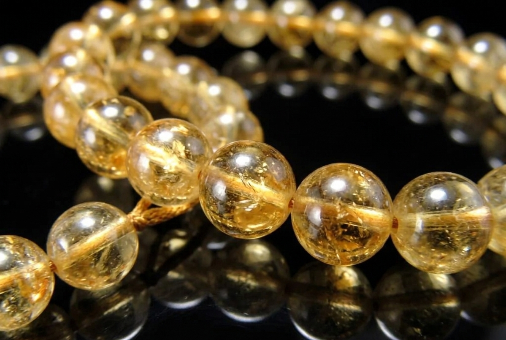
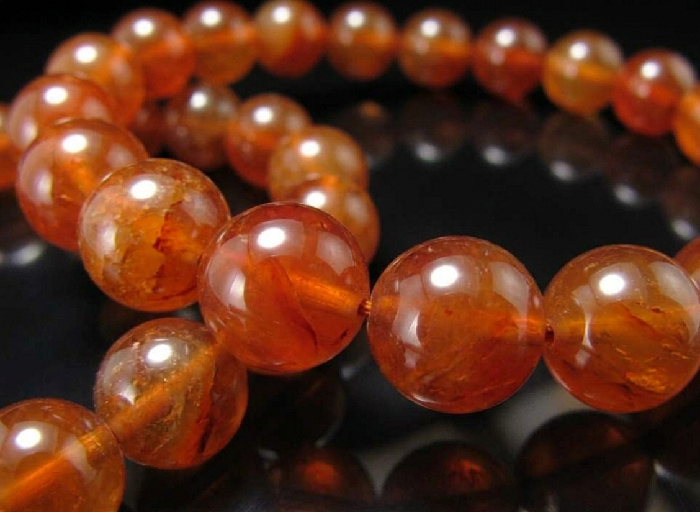
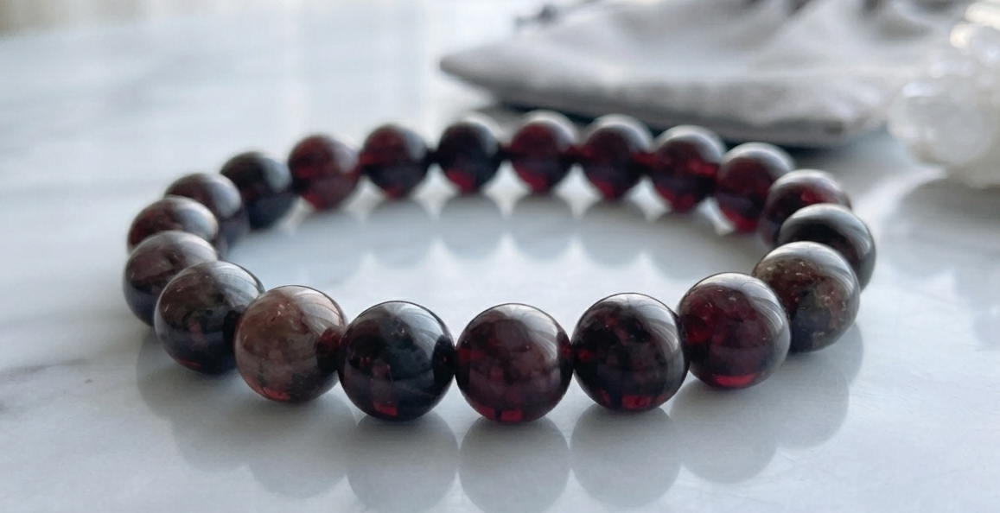

かか様
詳細のご希望、ありがとうございます。
かか様のために選んだ石について、
詳しくお伝えしますね。
かか様の命の流れを視させていただき、
今のかか様に最も必要な石を
3つ選びました。
かか様は、
太陽のように周りを照らす光を
生まれ持った方です。
次々と来る難題を受け止めながら、
台所に立ち、人の話を聞き、
ご家族の暮らしを守ってきた
芯の強さがあります。
でも、
夜に通帳を開いて
今月の残りを何度も数え直し、
疲れていても「大丈夫」と飲み込んで、
ご自分のことを最後に置いてしまう感覚が
繰り返されやすい流れがあります。
2026年12月に止まっていた流れが動き出し、
2027年の立春を境に、
突発的な難題が静まる方向へ切り替わります。
そして2028年には、
落ち着いた毎日が根づいていく流れが
すでに視えています。
その流れを最大限に活かすために、
かか様のエネルギーと
天照大御神（あまてらすおおみかみ）が
深く共鳴する3つの石を選びました。

太陽のような黄金色を宿した、
声を支える石です。
かか様の、
人の毎日を明るく保ってきた温かいエネルギーと
最も深く共鳴します。
年明けの請求や通帳を前に、
また数え直しはじめそうな夜、
「私にも、光を向けます」と
言い切るその声を
そっと支えてくれます。

天照大御神と最も共鳴が強い、
太陽の石です。
朝日のような橙を宿し、
冬の一番暗い日のあとに戻ってくる
光の力を持っています。
かか様の命の流れには、
周りを照らす太陽の光と、
その光をご自分には向けない癖が
同居しています。
カーネリアンは、天照大御神の守護を日常の中で
ずっとそばに置いておける石です。
合図の言葉を言ったあと、
ご自分の足元にも光が落ちて、
固まっていた気持ちの結び目が
一つずつほどけていくのを
静かに助けてくれます。

深い紅を宿した、
熱を巡らせる石です。
疲れが体に溜まって
手足まで冷えてしまう夜、
「大丈夫」のほうが先に出て
合図の言葉を言えなかった日に、
そんな自分を責めてしまうとき、
その自責のループを
静かにほどいてくれます。
人を照らす優しさを止めるのではなく、
冷えた体と気持ちに熱を戻して、
明日また言えるように
あたたかな方向へ整えてくれる石です。
シトリン・カーネリアン・ガーネット。
この3つをかか様専用に組み合わせて、
一つひとつ手作りで仕上げます。
天照大御神への祈祷と
エネルギーチャージを込めて、
かか様のもとへお届けします。
身につけていくうちに、
ご自分の分を先に取り分けて
ほっと息をつける感覚が
少しずつ戻ってきます。
知らせの音に胸が跳ねる瞬間、
布団の中で明日の段取りを
組み立てはじめてしまう瞬間。
そういう揺らぎのとき、
石が、そのループをほどくのを
静かに支えてくれます。
日常の中で、守護がそばにある。
そして2027年の立春、
難題の流れが静まる方向へ切り替わるその時期に、
エネルギーが整った状態で
迎えやすくなります。
かか様の場合、
12月の冬至を境に光が戻りはじめ、
2027年の立春から、
暮らしの流れが穏やかな方向へ
切り替わっていく流れがあります。
パワーストーンのエネルギーが
しっかりと馴染むまでには、
通常2〜3週間ほどかかります。
今から始めることで、
2027年の立春を迎える頃には
エネルギーが馴染んだ状態で
迎えやすくなります。
今回ご購入いただいた方には：
ご希望の方は、下のボタンよりお進みください。
※ 別ウィンドウで購入ページが開きます
お値段のことは、
どうぞ無理のない範囲で
ご自分のペースで決めてくださいね。
ご不明な点があれば、
お気軽にお尋ねくださいね。
かか様が、
「私にも、光を向けます」と
ご自身に許したその瞬間から、
天照大御神の守護が、
かか様の優しさと芯の強さを
静かに支え始めます。
どうか、これからは
窓辺の光がいちばん明るい席で
ご自分の湯呑みを両手で包む朝を
迎えてくださいね。